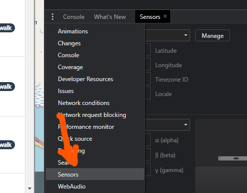

You unzip the labs.zip and navigate to the labs/rxjs folder and run npm install
Run ng serve. Wait for the serve to compile the application, and then goto http://localhost:4200
In the app.component.ts sort the playgrounds when the location is available using the LocationService. The service has a property called location$ which has the current geolocation and a getDistance(position1, position2) method to calculate the distance between the two coordinates
Use the sensor tab in the devtools to alter the current location. E.g 55.686674793141535, 12.557281573835894, and then Blågårdspladsen should be closest
Verify the sorting changes
?